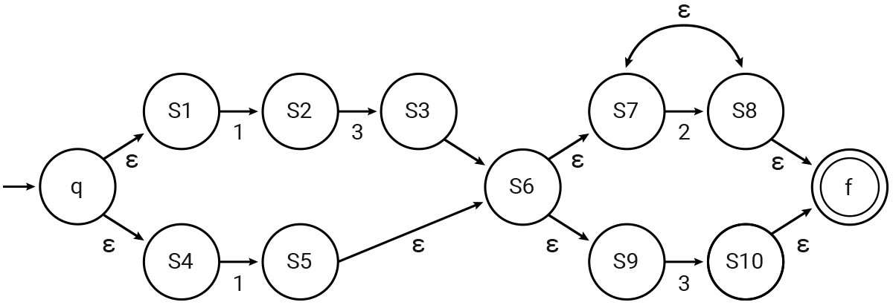

One handy property of regular expressions is that matching one of them is equivalent to being accepted by a special type of machine called a nondeterministic finite automaton (NFA).
An NFA is a graph of states and transitions, with a special initial and final state. Each transition is labeled with a digit or ε. When processing a string, the machine may move from a current state to another state by taking an ε-transition, or by taking a digit transition that matches the current digit of the string and moving to the next digit. After the last digit of the input string is read, only ε-transitions are allowed. If there is a path from the initial digit to the last digit that reads the entire input, we say the input string is accepted or matched, and that path is called an accepting path.
Thompson's construction is
one algorithm to construct an NFA that matches regular expressions.
The general outline is start with two special states: the initial state, q, and a
final accepting state, f.
Then build up the NFA f(E) recursively:
Here's an example NFA built from the Integeregex (13|1)((2)*|3)
|  |
Consider the following example: the input string 1322 has an accepting path on the
NFA above that goes through these states:
q, s1, s2, s3, s6, s7,
s8, s7, s8, f.
Notice that there are multiple paths for each string, some may be accepting and some others may
not. Just one accepting path is enough for the string to be accepted.
Start with the set of possible states containing only the initial state (q).
For each character C in the string:
For each of the last possible states:
Find all the states that can be reached by ε-transitions then a
transition on C.
Add these to the new set of all possible states.
From the last set of possible states:
if the accepting state (f) is reached from any of these states by
ε-transitions then the NFA (and the regular expression) match!.
For example to check the string 1233 against our example NFA:
the NFA starts in the initial state q
After ε-transitions and a transition on 1, the NFA can be in any of the states
{s2, s5}.
After ε-transitions and a transition on 3, the NFA can be in any of the states
{s3, s10}.
After ε-transitions and a transition on 2, the NFA can only be state s8.
After ε-transitions and a transition on 2, the NFA can only be state s8.
Because the accepting state f can be reached from s8 with
ε-transitions, the NFA, and the regular expression, match 1322!
We can now use dynamic programming to quickly check how many numbers less than or equal to X
match the NFA.
We keep a map of (is_empty, is_prefix_of_x, possible_states) to memoize the result starting from
that state.
We use is_empty to keep from adding zeros at the front of the number.
We use is_prefix_of_x to keep from counting numbers larger than X.
def MatchNFA(X, transitions):
x_digits = []
for c in str(X):
x_digits.append(int(c))
# Start of numbers with same length as X.
count_state = { (True, True, 'p') : 1 }
for index in range(len(X)):
# Start of shorter and shorter numbers.
new_count_state = { (True, False, 'p') : 1 }
for (is_empty, is_prefix_of_x, states), count in count_state.items():
for new_digit in range(10):
if is_empty and new_digit == 0:
continue # Numbers can't start with 0.
if is_prefix_of_x and new_digit > x_digits[index]:
continue # Numbers can't be greater than X.
# Find all possible states if new_digit was next in the string
new_possible_states = []
for start_state in states:
# Add all states that can be reached from start_state by (ε)* new_digit
for epsilon_state in transitions[start_state]['']:
new_possible_states += transitions[epsilon_state][new_digit]
new_count_state[(False, is_prefix_of_x and new_digit == x_digits[index],
set(new_possible_states))] += count
count_state = new_count_state
count_match = 0
for (is_prefix_of_x, states), count in count_state.items():
for final_state in states:
if 'f' in transitions[state]['']
count_match += count
return count_match
Finally we calculate the number of matching numbers between A and B as
MatchNFA(B, transitions) - MatchNFA(A-1, transitions).
As the number of states in the NFA grows, new_possible_states can grow exponentially
large (it can theoretically be the powerset of the states). However, the small maximum length
of the regular expression and the amount of non-digit characters consumed to include disjunctions
or repetitions make it so that the number is actually really small (for a computer) in practice.
There are mathematically provable bounds on the number, but the proofs are too long to fit
in the margins of this analysis.